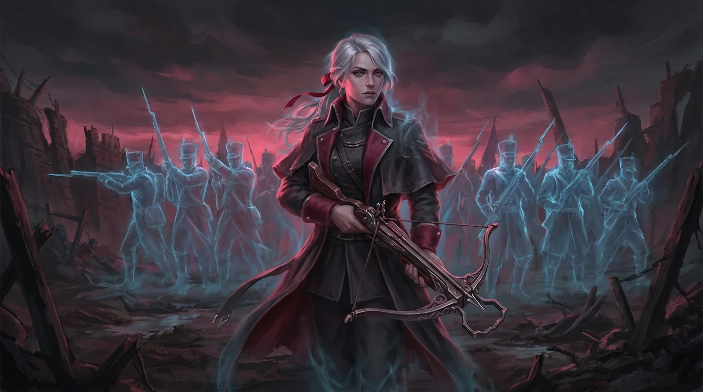

Passive
Cadence
Basic attacks stack Attack Speed.
At maximum Cadence, Vera enters Firing Line.
While in Firing Line, each basic attack is repeated by a spectral firing echo for partial magic damage.

Where Tavi embodies repeated childhood play, Vera embodies Merrin's final war: firing lines, siege commands, volleys, discipline, and death.
She understands death clearly and is emotionally detached rather than naive.
Her weapon identity is an ancient Merrin siege arm — two-handed, Flux-driven, carried like a service piece — supported by spectral firing ranks.
A young soldier still fighting in the wreckage of her own city. White-silver hair in a short high side-tail bound with a red ribbon, red eyes, pale skin marked with dust and a scratch across one cheek. She wears a black layered Merrin coat torn to ribbons at the hem with its red lining showing through every rent, over dark segmented armour — a heavy plated pauldron on one shoulder, banded gauntlets, thigh and shin plates, armoured boots. Her weapon is an enormous two-handed Merrin siege arm carried across her body like a service piece: dark timber and riveted iron, a bladed spike running forward past the muzzle, a hot red Flux line burning along its length, and a red pennant hung from the fore-end bearing a white cross-and-sword device. The same device hangs in torn banners through the ruins behind her, so it belongs to the force she is part of; whose exactly is still to be decided. Ranked across the full width of the frame stand spectral blue-white Merrin infantry — helmeted, bayonets levelled, drawn up in firing lines that recede into the distance. They are part of her silhouette and the source of her visual mass, and she reads as the one living thing commanding them. She is solid and opaque, and her Echo nature is carried entirely by those ranks rather than by any transparency of her own. At gameplay distance the read is one dark red-and-black figure with a long horizontal weapon standing in front of a pale blue mass; the red Flux line and the pennant are what separate her from her own soldiers at a glance. She is the memory of a war's last organised volley, not a lone ranger, hunter or duellist. Her weapon is never a gunpowder firearm and never a bow — the red Flux line along it is what marks it as Flux-driven. She is never translucent, ghostly or faded at the edges.
Basic attacks stack Attack Speed.
At maximum Cadence, Vera enters Firing Line.
While in Firing Line, each basic attack is repeated by a spectral firing echo for partial magic damage.
Deliberate long-range shot.
The target becomes Ranged and Vera gains increased basic-attack range specifically against that target.
Attacking the target refreshes Cadence.
Enter a stationary firing stance.
Vera cannot move, but gains:
- increased range; - increased Attack Speed; - resistance to slow/displacement; - slower Cadence decay.
Close-range cone spectral volley.
Deals magic damage and knocks enemies back.
Consumes Cadence, creating a defensive tradeoff.
Immediately reach maximum Cadence and prevent its loss for the duration.
Increase attack-speed ceiling.
Every third attack causes a spectral rank to fire through the target.
Docs/Design/Vanguards/07-vera.yaml.
Narrative and abilities: Veyra_Initial_Roster_Character_Bible_v0.6.md §7.
Generated by render_sheet.py.